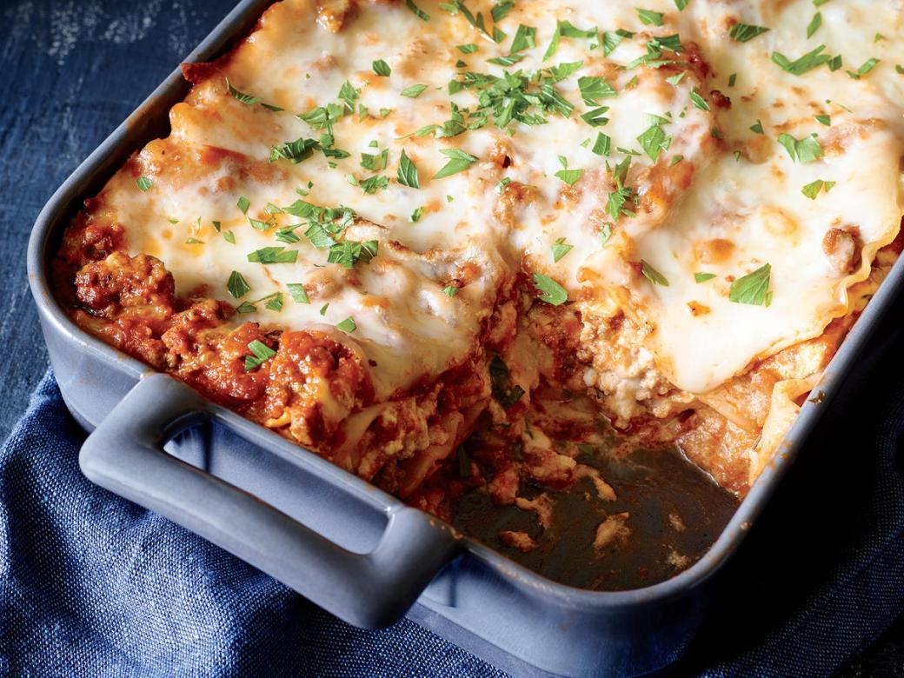

Lasagna

Lasagna is a type of pasta, possibly one of the oldest types, made of very wide, flat sheets. Either term can
also refer to an Italian dish made of stacked layers of lasagne alternating with fillings such as ragù (ground
meats and tomato sauce), vegetables, cheeses (which may include ricotta, mozzarella, and parmesan), and
seasonings and spices, like Italian seasoning, such as garlic, oregano and basil. The dish may be topped with
grated cheese, which becomes melted after baking. Typically cooked pasta is assembled with the other ingredients
and then baked in an oven. The resulting casserole is cut into single-serving square portions.
Ingredients
- 1 onion, crushed
- 2 (16 ounce) packages ground beef
- 3 tomatoes, chopped
- 1 small eggplant, chopped
- 8 white mushrooms, sliced, or more to taste
- 1 green bell pepper, chopped
- 1 zucchini, chopped, or more to taste
- 2 cloves garlic, minced
- 1 (16 ounce) can tomato sauce
- 1 pinch dried oregano, or to taste
- salt and ground black pepper to taste
- 1 tablespoon butter, or as needed
- 3 tablespoons all-purpose flour
- 1 gallon milk
- 1 (8 ounce) package no-boil lasagna (such as Skinner® Oven Ready Lasagne), or to taste
- 4 cups shredded mozzarella cheese
Steps
- Heat a saucepan over medium-high heat. Cook and stir onion until softened, about 5 minutes. Add beef; cook
and stir until browned and crumbly, 5 to 7 minutes. Add tomatoes; cook until softened, about 10 minutes. Add
eggplant, mushrooms, green bell pepper, zucchini, and garlic. Cook until vegetables soften, 15 to 20
minutes. Mix in tomato sauce, oregano, salt, and pepper.
- Melt butter in a separate saucepan over medium heat. Add flour; pour in milk slowly. Season with salt and
pepper. Bring bechamel sauce to a boil. Cook and stir until thickened, 5 to 7 minutes.
- Preheat oven to 350 degrees F (175 degrees C). Butter a baking pan.
- Pour some bechamel sauce into the bottom of the prepared pan. Add a layer of lasagna and a layer of beef
sauce; sprinkle some mozzarella cheese on top. Repeat layering until pan is full; sprinkle the remaining
mozzarella cheese on top.
- Bake in the preheated oven until top is browned and lasagna is heated through, about 2 hours.